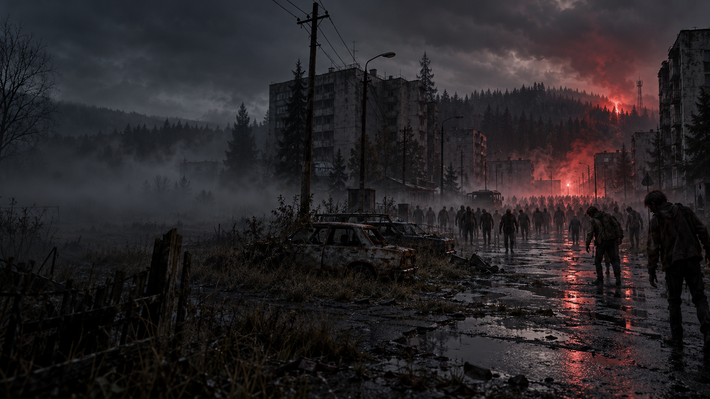

Cartografía de Chernarus+ y sus lugares de referencia.
DESTERRADOS · SERVIDOR EN DESARROLLO
Noon Interactive presenta
Charnarus
Un territorio conocido. Una historia que aún no has vivido. Entre bosques, ciudades abandonadas e infectados, cada ruta es una decisión y cada encuentro puede cambiar tu camino.
EXPLORA EL TERRITORIOReconocimiento
Lee el terreno.
La costa es solo el comienzo. Reconoce los recursos y las instalaciones militares antes de salir. El mapa te ayuda a preparar la ruta; sobrevivirla depende de ti.
Bases, zonas militares y aeródromos fijados en la cartografía.
Roleplay, PvE y PvP en una misma comunidad.
Traders, médicos, Mercado Negro y bases RP.
Datos reales disponibles cuando el servidor esté conectado.
La apertura, IP y requisitos se anunciarán en Discord.
El mapa
El país y tus próximos pasos.
Explora Charnarus, identifica recursos y selecciona una instalación para acercarte a ella. Todas las bases, zonas militares y aeródromos son PvP, excepto las identificadas expresamente como Base Militar (RP).
Arrastra para desplazarte. Usa la rueda, los botones o el gesto de pinza para hacer zoom. Las ubicaciones militares señalan puntos cartográficos; no delimitan el perímetro de una zona de combate.
Cartografía de iZurvive ↗MilitarMedicaciónAguaSuministrosRural⌖ Base PvPRP · Excepción militar
Cartografía de iZurvive · © Bohemia Interactive. Cargando el territorio…
GUÍA DE SUPERVIVENCIA
Campamento Base

La supervivencia
Cuando la ciudad
deja de ser tuya.
Los infectados forman parte del peligro. El hambre, el frío y la incertidumbre de otro superviviente completan el resto. Preparar la salida también significa saber cuándo regresar.
Busca una ruta de salida
Un camino hacia los recursos necesita también un camino de vuelta.
Elige tus encuentros
La cooperación puede abrirte puertas; en una base PvP, la precaución puede mantenerte con vida.
Cuida tu personaje
Agua, medicación y suministros son parte de cada decisión de supervivencia.
La comunidad
Lugares donde continuar tu historia.
Estos servicios forman parte del desarrollo de Desterrados. Su ubicación se publicará al confirmarse la configuración del servidor.
SERVICIOS DE DESTERRADOS
Traders
Intercambia dinero o recursos por suministros, equipamiento o medicación. El catálogo y la ubicación de los traders están en desarrollo.
Catálogo y precios por confirmar. Consulta las novedades en Discord.
SERVICIO EN DESARROLLO · UBICACIÓN POR CONFIRMARDESTERRADOS · NOON INTERACTIVE
Un territorio. Tu próxima historia.
La comunidad se prepara para llegar a Charnarus. Entra en Discord, conoce las normas y sigue las novedades de la apertura.